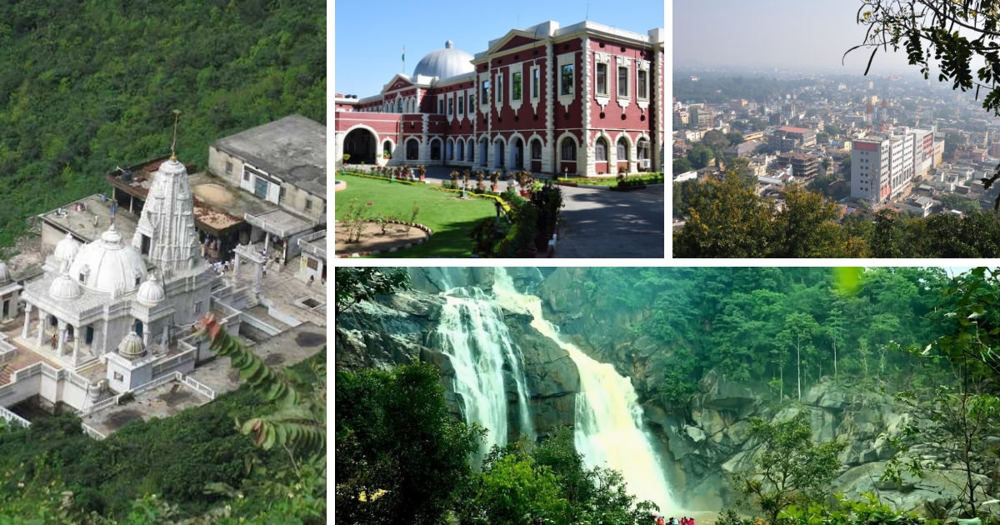

A land with a vast bounty of towering mountains, dense forests and gushing waterfalls, Jharkhand is a place for the nature lovers and wildlife aficionados. The lesser explored destination of India will let the travellers witness a plethora of natural scenic vistas that are unperturbed or untouched. Other than scenic landscapes, a trip to Jharkhand will let one explore several museums and temples that are scattered around the state. Jharkhand will not only introduce the tourists to the unparalleled beauties of nature but will give an opportunity to explore and learn about the diverse culture and lifestyle of the tribal community living here. For those planning to visit the state, the travel guide will let one know what all is to be covered when holidaying in Jharkhand.
Capital: Ranchi Location: Eastern India
BEST TIME TO VISIT JHARKHAND A trip to Jharkhand can be planned during the winter season between October and March when the weather is cool and pleasant making it favourable for a sightseeing tour and exploring the tourist attractions.
WHY VISIT JHARKHAND? For cultural tourism, waterfall and dam, eco-tourism, heritage walks, sightseeing tour, religious tour, rural tourism, adventure, fairs and festivals.
